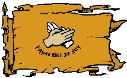

La baronnie de Kaoca
Histoire
Durant l'hiver de 1095 CV, à la différence des nains et des halfelins chassés d'Agramor et qui s'éparpillèrent dans toutes les provinces avoisinantes, les gnomes au contraire se concentrèrent tous dans la même région, entre Olizya et Azilian, là où vivait depuis déjà de nombreuses années une petite communauté gnome. Et suite au spectaculaire bond démographique qui suivra, le Roi-Dieu du moment décida au printemps 1096 CV de créer une province à part entière puis nomma à sa tête un baron, le chef de la communauté de l'époque, Ladislas 1er. La baronnie gnome de Kaoca était fondée (le nom vient du résultat d'un grand référendum où 11 noms étaient proposés aux habitants).
Géographie
Kaoca est une très jolie province où il fait bon vivre. De nombreuses collines, de nombreuses forêts, et un climat très doux. La capitale de la province est la ville de Kaoca.
Population
La baronnie de Kaoca est bien entendu majoritairement gnome et représente 75% de la population. Mais de nombreux humains et nains y vivent également, en harmonie avec les gnomes. Seuls les elfes, pour une raison inconnue, n'y sont pas présents. Les gens y sont généralement joyeux et contents de vivre, sans toutefois sombrer dans une ivresse enchanteresse. « Gentil et impitoyable, tel est le kaocalien », dicton célèbre, résume bien la situation. Les gnomes ne sombrent pas dans l'insouciance.
Villes principales. Kaoca (la capitale), Kolocoa, et environ 20 villages.
Population totale. 27 400 habitants (75% gnomes, 10% humains, 10% nains).
Politique
RELATIONS
La baronnie de Kaoca a su développer des relations cordiales avec toutes les provinces. La paix et la bonne humeur sont indispensables au tourisme. La diplomatie des gnomes est d'ailleurs reconnue dans l'ensemble du royaume et les gnomes servent souvent d'intermédiaires, principalement dans les conflits entre Laelith et les provinces.
Seule persiste face à Agramor une certaine réserve suite aux guerres d'épuration du sang qui, il y a quelques siècles maintenant, a contraint nombre de familles gnomes à émigrer.
Actuellement c'est le baron Léonidas IV dit « le gentil » qui gouverne la province. La constitution de la baronnie lui donne le pouvoir absolu, mais dans les faits celui-ci ne prend aucune décision sans avoir l'aval de son ministre, le Premier Magistrat, qui est donc en réalité l'homme qui dirige la baronnie. La baronnie effectue également fréquemment de grands référendums (dont la décision est respectée) afin d'impliquer ses sujets dans la vie quotidienne de la province. Le baron accorde une très grande importance au tourisme et à l'accueil des visiteurs sur ses terres. Tout gnome faisant montre de mauvais caractère et présentant donc Kaoca sous un aspect triste est alors immédiatement châtié. « Faire rire de soi » est la devise de la province et les plus grands amuseurs publics reçoivent de confortables pensions.
Cultes
C'est bien entendu à Kaoca que le panthéon gnome, Garl Brilledor en tête, reçoit le meilleur accueil et le plus grand dévouement.
Économie
Le tourisme est la première richesse de la baronnie et sa première source de revenu. Il n'est donc pas étonnant que le baron porte un intérêt important à la manière dont ses sujets se comportent. Deux bateaux quittent quotidiennement le port de Laelith pour rejoindre la baronnie (alors qu'il n'y en a qu'un par jour ou un tous les deux jours pour les autres provinces), ceci prouve son attrait.
Et Kaoca exporte énormément. C'est le plus grand producteur de chocolat (pur et amer) de la région, et les gnomes fabriquent des feux d'artifices et des jouets recherchés. En parallèle à ses activités plutôt bon enfant, Kaoca fabrique également de remarquables machines de guerres dont les seigneurs d'Agramor sont les principaux amateurs. La baronnie va donc bien, et on dit même que Kaoca est la plus riche des six provinces du royaume.
Guide du routard
Le parc d'attraction de Kolocoa. Un site unique au monde.
Le château de Kaoca. Une immense tour défiant les lois de la gravité, bâtie sur une roche plus dure que le diamant. Visite organisée chaque matin.
Navire olizyannais arrivant à Kaoca, par maître Pils
Écrit par blueace